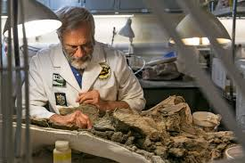

Contacte
Sóc un paleontòleg apassionat per l’estudi dels dinosaures i la divulgació científica. M’agrada compartir el coneixement sobre la història de la vida a la Terra i apropar la ciència a tothom.
- Nom: Dr. Fòssil Juràssic
- Professió: Paleontòleg
- Experiència: 10 anys d’excavacions
- Especialitat: Dinosaures del període Juràssic
- Lloc de treball: Museu de Ciències Naturals
- Publicacions: Més de 15 articles científics
- Habilitats: Identificació de fòssils i anàlisi estratigràfica
- Descobriment d'un esquelet gairebé complet de Allosaurus a la Serra de Montsant (2015).
- Publicació de l'article "Noves evidències sobre l'alimentació dels dinosaures carnívors" (2018).
- Excavació i estudi de restes fòssils del període Triàsic al Pirineu (2021).

Museu
Tornar a la pàgina principal